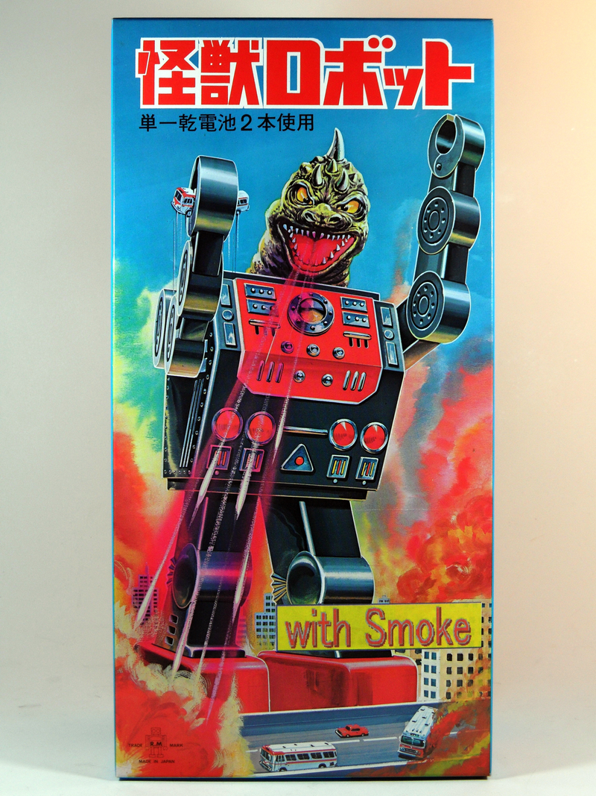

So your character needs to find a key, lost somewhere in the mess left by the previous owner, or perhaps to pick the lock. Or maybe that piano needs to be moved into the living room, or you need to find a way through an opaque bureaucratic process, or to look innocent in front of a judge, or intimidating in front of a lowly thug. Or perhaps you’re fishing in a river or piloting your starship or settling a duel with another Musketeer before the Guards of the Cardinal show up? Or perhaps your character is an entire religion, attempting to gain converts in a new land, or a team of medics and researchers, fighting step by step against an unknown pandemic?

In N-Dimensional Tourists ruleset, all these things are called Challenges, and are resolved with a single rule. This rule determines whether the characters succeed, fail or give up, and whether their attempt attracts any kind of Complication.
Meeting a Challenge is something that only player’s characters do. We’ll discuss below what happens how to resolve the actions of non-player character.
As you’ll see, meeting a Challenge is a very generic mechanism which may be used for pretty much any purpose or scale.
Setting up the Challenge, part 1
Before you can meet a Challenge, everybody involved needs to agree on what you’re trying to do, exactly. This is called Setting up. To setup the Challenge, you’ll need to answer a few questions:
- (Player’s decision) Objective What is the Challenge you’re trying to meet?
- (Player’s decision) Means How are you trying to meet it?
- (GM’s decision) Reach How much effect can the character reasonably achieve?
- (GM’s decision) Risk What kind if risks does this manoeuver entail, even if it succeeds?
This is typically a (very short) conversation between player and GM, to put everybody on the same wavelength. While both the Player and the GM may have opinions on the matter, the Player has the last word on some of these questions and the GM on others, as indicated above.
These answers will be used to determine the Challenge rank, the Attribute involved, and later the Outcome.
Note that Reach and Risk are on two different scales. It is entirely possible to achieve a lot during a Challenge (meeting and possibly exceeding the Reach) while also paying a dire Cost (meeting and possibly exceeding the Risk).
Example: Chess match
Tonight, during a reception at the Ambassador’s, an impromptu friendly Chess match has begun between two well-known grandmasters. In front of a high-society crowd of onlookers, Lady Buckingham, Chess Grandmistress of the Highest Society (PC) and Lord Dervon, Chess Grandmaster and Heir Apparent to the Prime Minister (NPC) will display their skills.
- Lady Buckingham: “I’m opening with simple manoeuvers.”
- GM: “Not so fast! What is your objective, here?”
- Lady Buckingham: “Well, I’m going to play chess?”
- GM: “For fun?”
- Lady Buckingham: “No, to win!”
- GM: “So your objective is to win. How far are you willing to go for this?”
- Lady Buckingham: “What do you mean?”
- GM: “Well, it is no secret that Lord Dervon wants to sleep with you. If you wish, you could probably use that fact to drop a bomb on him during the conversation, for instance, or strategically show some décolletage, to get him distracted.”
- Lady Buckingham: “That’s not really who I am, is it?”
- GM: “Your call, entirely.”
- Lady Buckingham: “No, I’ll play honestly. On the other hand, you’re right that this is a social opportunity, so there will be chatting.”
- GM: “Are you trying anything special while chatting?”
- Lady Buckingham: “No, just friendly conversation.”
- GM: “Ok, so what do you think we take this at a leisurly pace? We’ll first see how the first few moves go, while you’re chatting with Lord Devon, and see how things develop?”
- Lady Buckingham: “That sounds good.”
- GM: “Also, the worst you risk during these first few moves is probably looking – or sounding – like a fool.”
In this example, we have the following answers:
- Objective: Getting a good start on the chess game, while chatting amicably.
- Means: Counting on Lady Buckinghams’ chess skills.
- Reach: The position for the rest of the game.
- Risk: Looking or sounding like a fool.
Note that the GM’s decision would have been very different if the two characters hadn’t both been Chess grandmasters.
For instance, if only Lady Buckingham had been a grandmaster:
- (GM’s decision) Reach: As much domination as she whants.
- (GM’s decision) Risk: Disappointing the crowd.
Or, if only Lord Devon had been a grandmaster:
- (GM’s decision) Reach: Not being entirely dominated.
- (GM’s decision) Risk: ocial shame at being toyed with by a grandmaster.
For the rest of this example, we’ll keep our original setup.
Also, for this example, we’ll assume that Lady Buckingham has already used all her Sleeve Cards, so she won’t be able to use them during this Challenge.
Example: Escaping the Furnace
Alex, Action Journalist, had been in the attic for hourse, searching the house of the suspect for clues, when he realized that a fire had started. He now needs to make an exit, hopefully with some of the evidence he had managed to sort out.
- Alex: “So, I had a big heap of documents somewhere in the attic, which I intended to read more in details. I’ll try and make an exit with these documents.”
- GM: “You have maybe 10kg worth of papers, without any kind of bag to carry them all. That’s tricky.”
- Alex: “Ok, then I’ll just grab as many as I can put under my arm, and run to the exit.”
- GM: “Alright. That sounds possible. If you succeed well enough, you’ll keep an armful of documents. You might fail, of course, in which case you’ll lose some or all of the documents, but the main risk is not to the documents, it’s to you. Because, well, there is a fire in the house.”
- Alex: “Fair enough.”
In this example, we have the following answers:
- Objective: Leaving the house safely with an armful of documents.
- Means: Running to the exit as fast as possible while keeping documents under my arm.
- Reach: Alex should be able to reach the exit with the documents.
- Risk: Anything that can happen in a fire.
In other words, the GM agrees with Alex’ plan and will resolve it all as one meet. The GM could have decided that the scene deserve more pacing and that Alex would at first only reach the floor below the attic. This would have decreased the effect.
Also note that the GM mentions “we don’t know what you’re going to meet on your way down” – indeed, that’s something that will be decided at the end of the Challenge.
For this example, we’ll assume that Alex doesn’t have any Sleeve Cards at hand.
Example: Kaiju attack
We are in Tokyo, today is Wednesday, so a giant monster attacks! It is called Levinulon, it is taller than the Tokyo General Hospital, and it is clearly here to destroy as much of the city as it can. Fortunately, the Tokyo Mechanized Defense Force Mechanized Defenders of the City (that’s a single PC), in its non-military battle robots, is there to protect the city!

- Tokyo Mechanized Defense Force: “For the moment, we’re taking position and trying to distract Levinulon from any civilian crowds.”
- GM: “Ok, how do you do this?”
- Tokyo Mechanized Defense Force: “As much as possible, we’re using our remote-controntrolled drones, but if it’s not sufficient, we’re going to make as much noise as possible without endangering civilians. Maybe by throwing cars, or something.”
- GM: “Alright. That sounds possible. For the moment, you’re not endangering yourselves overmuch. So, it looks like any risk you take will be something like attracting Levinulon’s attention a bit too much, too early, or perhaps destroying a few too many things around you. Also, if you succeed, you’ll certainly be fighting Levinulon next.”
In this example, we have the following answers:
- Objective: Focus Levinulon’s attention on anything other than civilians.
- Means: Distracting Levinulon with drones or, if necessary, the mechs themselves.
- Reach: Affecting Levinulon’s focus.
- Risk: Little risk to the Tokyo Mechanized Defense Force, but some risk to the city itself.
This only works because the the Tokyo Mechanized Defense Force is equipped to fight Kaijus. Otherwise, the GM would certainly have minimized the effect that the Tokyo Mechanized Defense Force may reasonaby achieve (“save a few civilians”) and/or increased the risk (“get wiped out in the attempt”).
For this example, we’ll assume that the Tokyo Mechanized Defense Force doesn’t have any Sleeve Cards at hand.
Setting up the Challenge, part 2
Once everybody agrees on the nature of the Challenge, two more questions can be answered:
- (Player’s decision) Attribute What Attribute are you using for this purpose?
- (GM’s decision) Rank What’s the Rank of the Challenge?
The Attributes are the 5 Attributes on the character sheet. If you recall, they are:
- Rock (stability, authority, power, physical strength);
- Paper (knowledge, deduction, riches);
- Blades (violence, ability to effect change);
- Serpent (speed, survival, stealth, deception);
- Unknown (imagination, intuition, perception).
A lower attribute will increase the likelihood that the risks (or worse) will be realized while attempting to achieve the character’s goals, while a higher attribute will decrease this likelihood.
The Attribute picked must, of course, match the description of what the character is doing.
Ranks are defined as follows:
- Mythic 9
- Legendary 8
- Epic 7
- Fantastic 6
- Superb 5
- Great 4
- Good 3
- Fair 2
- Average 1
- Mediocre 0
Conversely, a higher Rank will increase the likelihood of either failure or that the risks will be realized, while a lower Rank will decrease it considerably.
Example: Chess match
- Lady Buckingham: “I’ll be relying on intelligence and deduction, so that’s Paper, which is good, because I have Superb (5) in Paper.”
- GM: “Lord Devon is your peer, so the difficulty will also be Superb (5).”
Example: Escaping the Furnace
- Alex: “I’ll be moving fast, which sounds like Serpent, while keeping the papers safely with me, which sounds like Rock. If it’s ok, I’ll take the highest, which is my Great (4) Rock.”
- GM: “Sounds reasonable. As for the fire, since you react quickly, it shouldn’t be too difficult for you, so it’s a Good (3) rank.”
Example: Kaiju attack
- Tokyo Mechanized Defense Force: “I’ll be relying on fast movement and misdirection, so that’s Serpents. I have Great (4) in Serpent.”
- GM: “Given Levinulon’s size and general taste for mayhem and destruction, attracting his attention might be very difficult. So, let’s make it a Superb (4) difficulty.”
Drawing cards and narrating progress

Now that everything is setup, the next step is to draw cards.
Challenge draws and GM narrates
The Challenge draws as many cards as its Rank and places them, face visible, on the table. Orientation of cards matters. This is typically done by the GM, but that’s not a requirement.
As a special rule, if the Challenge encounters the Excuse while drawing, drawing stops at the card before the Excuse.
Pay special attention to the cards that are reversed. They will be used to determine the Cost of the Challenge. Similarly, any card drawn by the Challenge may affect the Effect.
Once the Challenge has drawn, whoever drew for these cards gets to narrate some of the difficulties encountered by the character.
Example: Chess match
As Lord Devon represents a Superb (5) challenge, the GM draws 5 cards:


- GM: “Lord Devon is obviously in no hurry (Longevity). He starts slowly, cautiously following his usual style (Heaven & Hell, the usual game). What you may or may not realize in time is that he has a sophisticated trap in mind (Subterfuge) against your Queen (Living to Consume). At the end of this early game, the trap will have closed and it will be Too late for subterfuges.”
Example: Escaping the Furnace
As the fire represents a Good (3) challenge, the GM draws 3 cards:


- GM: “For a while, you were busy in the attic, digging through crates of paperworks, and nothing happened. The attic is full of, well, way too many things. You can find Japanese artwork (Soldier of Paper), old movie parapharnelia (Lover of Unknown), and tons of things piled haphazardly on top of each other (Failures on top of failures). And suddenly, as if coming from nowhere, fire (Sudden power)!”
Note that the GM didn’t use the interpretation Underestimating the enemy, as they couldn’t find a way to use this without forcing their narration on Alex. Alex’ player has control over his character, so only that player may decide whether Alex did or did not underestimate the enemy.
Example: Kaiju attack
Levinulon’s focus is Superb (4), so the GM draws 4 cards:


This time, the GM decides to take things mostly literally:
- GM: “By the time you arrive, Levinulon has already destroyed a large subway station (XI. of Triumph) and is tearing apart a skyscraper (IV. of Triumph). Under its footstep, you can also see the remains of what must have been a brothel (A truth, uncovered), full of naked people dead or screaming. Levinulon simply stepped through it, tearing through as if it had been paper (Overlooking an obstacle).”
Character draws and Player narrates
To beat the challenge, the player will now draw cards for their character. The challenge is beaten if the player draws cards that beat all the cards of the Challenge. As the player draws cards:
- the likelihood of beating the Challenge increases;
- the Effect of beating the Challenge increases;
- the Cost increases, which may prompt the player to stop drawing;
The player may decide to not draw cards. If this happens, all Cost is avoided, regardless of the number of reversed cards already drawn by the Challenge. Unless the challenge had a Rank of 0, this means that the challenge is not beaten. Also, to provide a manner for the character to bounce back to initiative, the player draws one Sleeve Card, to be used after this Challenge.
If the player decides to draw, they take cards one by one, as follows:
- the Cost starts below 0, at minus the value of the Attribute involved;
- before drawing a card, the player may decide to stop;
- if the card is the Excuse, discard it and stop drawing immediately;
- if the card is reversed, it increases the Cost;
- if the Cost is 5, this is a Wipe Out, stop drawing immediately (you don’t want a Wipe Out, ever);
- if the table has 1 (respectively 2, 3, 4, 5) cards of the same figure (e.g. 2 Servants, or 2 Lovers, or 2 Dragons, …), this increases the Effect to 1 (respectively 2, 3, 4, 5). This includes both the cards of the character and those of the Challenge. As Triumphs have no figure, they do not count towards Effect;
- after drawing every card, the player narrates their charater’s effort
Example: Chess match
If you recall, the GM has drawn the following cards for Lord Devon:
That’s unlucky for Lady Buckingham, as this card is the strongest in the entire deck:
As Lady Buckingham simply cannot beat this hand, Lady Buckingham’s player decides to not draw. She has lost this round, but as she hasn’t drawn, there is no Cost for her.
Example: Escaping the Furnace
If you recall, the GM has drawn the following cards for the Furnace:
Alex is luckier than Lady Buckingham, as all these cards can be beaten. So far, two cards are reversed. Since Alex has a Great (4) Rock, that’s a Cost of -2 so far.
Alex starts drawing

This card is reversed, so Cost climbs to -1.
- Alex: “Fire quickly spreads everywhere, it’s a nightmare!”
It doesn’t beat any of the cards of the Challenge, so Alex decides to continue drawing.

This card is reversed, so the Cost climbs to Mediocre (0). This card is a Paper, Paper beats Unknown, so the two Unknown cards in the Challenge’s hand are now beaten.
- Alex: “I’m surrounded by paper and rotting timber (Letting the world rot). This is going to get even worse soon!”
Only one more card to beat!

This card is reversed, again, so the Cost climbs to Average (1). So far, it’s a very minor Cost.
- Alex: “At first, I look for an easy way out, a manner of getting out of there without going through the fire, but no, that’s futile. I’ll need to go through the fire to get out of here.”
This card is a Triumph, so it beats all the cards of the Challenge. At this stage, the Challenge is won.
Let’s look at all the cards on the table:
So far, there are no pairs, so Alex currently has an Effect of Mediocre (1). Most likely, that means that he’ll only have managed to grab a few documents on the way out. Alex decides to keep drawing, in order to try and increase his Effect, at the risk of increasing the Cost.

Once again a Triumph, but still no pairs, it doesn’t increase the Effect. On the upside, the card is upright, so it doesn’t increase the Cost, either.
- Alex: “Fortunately, as an Action Journalist, I’m always ready for action. I bravely step through the fire.”
Alex continues.

One more Triumph, but still no pairs, it doesn’t increase the Effect.
- Alex: “As I walk through the furnace, covering my face as well as I can to avoid breathing toxic fumes, I hear a big bang somewhere, but I won’t let this distract me.”
Alex continues.

Ahah, that’s a second Builder! That gives Alex one pair. He decides to stop drawing here, with a Cost of Mediocre (1) and an Effect of Fair (2).
- Alex: “In a final display of my trademarked Action Journalist sprinting skill, I manage to leave the furnace. I end up in the street… let’s see in which state.”
Example: Kaiju attack
If you recall, Levinulon drew:
Tokyo Mechanized Defense Force is Great (4) in Serpents, so starts with a Cost of -4. Since one card is already reversed, that’s now -3.
Tokyo Mechanized Defense Force draws:

So far, Levinulon’s focus is greater. Also, Cost increases to -2.
- Tokyo Mechanized Defense Force: “For the moment, it looks like Levinulon hasn’t seen us at all, or our drones (Where is Waldo?).”
Tokyo Mechanized Defense Force draws again.

Levinulon’s remains greater. Also, Cost increases to -1.
- Tokyo Mechanized Defense Force: “It’s actually quite humbling. Even in our mechs, we feel like paper dolls in front of this giant (Diminished).”
Tokyo Mechanized Defense Force draws again.

Levinulon’s focus is still greater. Costs remains unchanged.
- Tokyo Mechanized Defense Force: “To add to the insult, it really looks like Levinulon is having too much fun destroying these buildings and killing all these people to pay attention to us.”
Tokyo Mechanized Defense Force draws again.

Levinulon’s focus is still greater. Cost increases to Mediocre (0).
- Tokyo Mechanized Defense Force: “Also, the very ground is shaking whenever Levinulon takes a step (Unreliable foundations). Our mechs are built for mobility, which makes us relatively frail. We keep losing our balance and stumbling around as the ground shakes.”
Tokyo Mechanized Defense Force draws again.

Levinulon’s focus is still greater. Cost increases to Average (1).
- Tokyo Mechanized Defense Force: “We must have turned around Levinulon five or six times, making as much noise as possible, without succeeding at catching his attention (Senseless cycle).”
Tokyo Mechanized Defense Force draws again.

Levinulon’s focus is finally beaten! Cost increases to Fair (2). There are two Soldiers on the table, so the Effect is currently Fair (2). The GM informs the player that the Tokyo Mechanized Defense Force itself is now at some risk.
- Tokyo Mechanized Defense Force: “Finally, in a very risky move, our Pigeon-Class Mech takes flight above Levinulon (Taking Flight) and Levinulon looks at it. I think we caught its attention!”
As Tokyo Mechanized Defense Force prioritizes saving citizens to its own survival, the player would like an Effect of Good (3). For this purpose, the player would need a third Soldier. The player draws again.

Cost increases to Good (3), with an Effect still at Fair (2). The GM informs the player that any further reversed card will start hurting the Tokyo Mechanized Defense Force.
- Tokyo Mechanized Defense Force: “Yes, Levinulon looks away from the latest skyscraper it was destroying (Farewell to the mighty) and finally focuses upon us.”
Bravely, Tokyo Mechanized Defense Force draws again.

This card alters neither the Cost nor the Effect.
- Tokyo Mechanized Defense Force: “It’s time for the mechs to show their Polyvalence. We’re going to try and surround him, to ensure that he doesn’t have a single target, and make as much noise as possible to ensure that he keeps focusing on us!”
Without fear, Tokyo Mechanized Defense Force draws again.

That’s a second Ruler, so a second pair. This does not influence the Effect.
- Tokyo Mechanized Defense Force: “Incoming message from the Command Center (Ruler): ‘Don’t get so close, it can destroy you all easily!’”
Tokyo Mechanized Defense Force decides to stop before luck runs out.
So, Tokyo Defense Force has acheived a Fair (2) Effect at a Good (3) Cost. It could have been worse (the rules are design to make Cost easier to accumulate than Effect). The player will get a second opportunity to interpret this result in a moment.
Outcome of a Challenge
Now that the cards are drawn, the only thing that remains to do is to narrate the outcome. Typically, most of what happened during the Challenge has already been narrated, but now is time to conclude it as a Success or Failure, and to account for Cost.
As a general rule is that the Player is entirely in charge of narrating the outcome, as long as it doesn’t impact another player’s character – if this happens, you need the agreement of that other player.
Additionally, when you narrate Effect and Cost, the GM is in charge of making sure that the description is roughly proportionate to the Effect and Cost as drawn.
Determining and narrating Failure
A character has Failed if at least one card of the Challenge was not beaten or if the player decided to not draw.
This means, in particular, that a character can simply never fail a Challenge with a rank of Mediocre (0).
If your character has failed, pick some of the cards on the table and use them to narrate what has happened. If it sounds interesting, the GM may ask you to write down your Failure as an Aspect, which may be used later to elaborate on the consequences of this Failure.
Example: Chess match
Lady Buckingham’s player chooses to interpret the following cards picked by Lord Devon:
- Lady Buckingham: “Lord Devon has managed to trick me. I should realized that he was using the Calrissian gambit, but unfortunately, I fell for it. Now, my only way out of his trap is forward. I’ll need to play aggressively from now on.”
- GM: “Can you write down an Aspect?”
The player writes Tricked by Lord Devon.
Both Lord Devon and Lady Buckingham will remember what has just happened – there will be consequences.
Also, as Lady Buckingham conceded the Challenge, she gets to draw one Sleeve Card

She’ll be able to use it for the mid-game of this match, or anytime after.
Determining and narrating Success
If each card drawn by the Challenge is beaten by at least one card drawn by the player, the Challenge ends in a Success for the character.

It’s time to look at the Reach and Effect to determine just how much the character has managed to achieve. As a general idea, if the Effect is:
- Great (5) – The character has achieved the best possible result, regardless of the Reach established before drawing cards.
- Good (4) – The character has exceeded the Reach.
- Fair (3) – The character has almost achieved the Reach.
- Average (2) – The character has roughly achieved half of their Reach.
- Mediocre (1) – It’s a nominal success, but frankly, nothing was achieved.
The player should now pick a few of the cards (typically, the pair/triple/… if there is any) and use it to narrate the Effect.
Note that Effect and Cost do not cancel out each other, so you may end up with a Great Effect and an equally Great Cost for the same Challenge.
Again, if it sounds interesting, the GM may ask you to write down your Success as an Aspect, which may be used later to elaborate on the consequences of this Success.
Example: Escaping the Furnace
Alex has succeeded at escaping the Furnace with the following pair:
That’s an Average (2) Effect, which means that he’s achieved roughly half of what he was attempting to do. This could mean for instance that Alex hasn’t reached the exit yet, or that Alex has lost roughly half of the documents, or that Alex has only grabbed a handful of documents.
- Alex: “Ok, that’s not ideal, but it’s still better than nothing. So, with my great investigation skills, I had actually managed to find hundreds and hundreds of documents, which I was in the process of sorting into boxes. When I realized that the house was on fire, I started grabbing two boxes, one under each arm, but when I reached the ladder, I figured that I could couldn’t both get these papers down the ladder and save my skin. I decided that my skin was more important than my investigation, so I stuffed what I could in my pockets and ran the rest of the way to the exit.”
Note that Alex has slightly changed the initial description of his actions now that he knows the result of the cards. As long as it doesn’t change the outcome, this is entirely acceptable.
- GM: “Could you write this down as an Aspect?”
The player writes down Most of the evidence was destroyed, but a few wads of paper survived.
Example: Escaping the Furnace (best possible case variant)
If Alex had succeeded with a Superb (5) Effect, he would have made it out of the furnace with all the important papers. The furnace might accidentally even have helped him reveal hidden proofs or clues – possibly a dead body.
Example: Kaiju attack
The Tokyo Mechanized Defense Force had, with difficulty, succeeded with a Fair (2) Effect, with the following pairs:
The Reach was to affect Levinulon’s focus. Since an Effect of Fair (2) suggests that the Reach is halfway met, this can translate to the Tokyo Mechanized Defense Force having succeeded, but not before Levinulon has had the time to kill a large number of civilians.
- Tokyo Mechanized Defense Force: “For me, Farewell to the Mighty and The rule is the same for all indicate that Levinulon has destroyed a very important building. Say the Bank of Japan.”
- GM: “The Reach was about civilians.”
- Tokyo Mechanized Defense Force: “Oh, right. Well, while we were still trying to attrack Levinulon’s attention, it stepped on the building, before they had time to evacuate. There will be hundreds of casualties, including the President of the Bank of Japan.”
- GM: “That’s in addition to the subway station, the brothel, etc.?”
- Tokyo Mechanized Defense Force: “Yeah. Lots of damage.”
- GM: “You could have done a little less, but it sounds fair. What about an Aspect?”
The player writes down an Aspect The Tokyo Mechanized Defense Force couldn’t save the Bank of Japan. Undoubtedly, there will be consequences at some point in the future.
Example: Kaiju attack (best possible case variant)
What if the Tokyo Mechanized Defense Force had succeeded with a Superb (5) Effect?
Well, in that case, it would immediately have attracted the attention of Levinulon. Moreover, the Tokyo Mechanized Defense Force would certainly have found a way to neutralize Levinulon as a threat, possibly by managing to lead it out of Tokyo, or to move the fight underwater.
Example: Chess match (best possible case variant)
What if Lady Buckingham had succeeded with a Superb (5) Effect?
Well, in that case, she would have clearly dominated the early game – possibly with an early checkmate, if the player decided. Also, since such a large Effect gives the player the ability to considerably exceed the Reach, she would have managed to further whatever objective she had for this evening. Perhaps, during the idle chat, she could have managed to slip information meant to be heard by the right persons, starting the appropriate high-society rumor, or she could have gotten Lord Devon to accidentally divulge a secret of interest to her.
Determining and narrating Cost
Regardless of whether you succeeded or failed, it’s time to look at the Risk and Cost to determine just how much the character has suffered from this Challenge. As a general idea, if the Cost is:
- Great (5) – The worst thing that could happen to the characters in the context has happened, regardless of what Risk was established before drawing the cards.
- Good (4) – The cost exceeds the Risk established before drawing the cards.
- Fair (3) – The cost is not quite as bad as the Risk established before drawing the cards.
- Average (2) – The cost is roughly half of the Risk established before drawing the cards.
- Mediocre (1) – The cost is minor and temporary.
Recall that players can decide to stop their draw whenever they want, so Costs of Good or Great will be extremely rare, and even Costs of Fair will be uncommon.
Example: Chess match
Lady Buckingham conceded the Challenge without drawing cards, so she incurs no Cost.

Example: Chess match (worst possible case variant)
If Lady Buckingham had suffered a Great (5) cost, regardless of winning or losing, she would somehow have passed for a fool in front of a crowd of her peers. The player would have narrative control to decide exactly how this would have happened, and whether Lady Buckingham is responsible or simply a victim of circumstances.
For instance, people in the crowd could have started gossiping about her highly improper – and possibly entirely imaginary – flirt with Lord Sussex, or her pregnancy. Or could have received a message that a certain Scotland Yard detective was waiting for her in the antechamber, along with a few bobbies dispatched to arrest her. Or she could have been drunk and making improper jokes while playing chess, etc.
Fortunately, none of this happened.
Example: Escaping the Furnace
In this case, Alex suffers a Cost of 1, which is barely worth mentioning.
The player looks at one of the reversed cards
- Alex: “I’m getting out of this fire alive, but I’ll be having nightmares for nights to come!”
- GM: “Sounds about fair. Could you write down this as a temporary Aspect for me?”
Alex writes down Nightmares on Fire.
Example: Escaping the Furnace (worst possible case variant)
If Alex had suffered a Cost of 5, he would not have died in the furnace, as his draw was successful. However, he might have collapsed in the street, poisoned by the toxic fumes, and spent the next two years in an hospital.
Or, he could have made it out of the fire only to be shot by whoever had started this fire. Or only to receive a phone call from his editor informing him that he was let go for unspecified reasons. Etc.
Again, the player gets to narrate a worst case scenario.
Example: Kaiju attack
The Tokyo Mechanized Defense Force has suffered from a Good (3) Cost, with the following reversed cards
The Risk was: “Little risk to the Tokyo Mechanized Defense Force, but some risk to the city itself.” – as mentioned by the GM, with a Good (3) Cost, the Tokyo Mechanized Defense Force actually suffers from this Cost.
- Tokyo Mechanized Defense Force: “Let’s see… Unreliable Foundations and Farewell to the Mighty, so that sounds like buildings collapsing. We’ve already covered some of that. There has been considerable destruction, not just the Bank of Japan. I also see Overlooking an Obstacle and Diminished – that sounds like one of my drivers was hiding behind one of the buildings that was destroyed, and didn’t get out in time. So one of the mechs is severely damaged, I don’t know if he’ll be able to make it for the rest of the event.”
- GM: “Can you write me down an Aspect?”
The player writes down One severely damaged mech. This will undoubtedly serve later.
Example: Kaiju attack (worst possible case variant)
With a Great (5) Cost, the Challenge could have covered a much longer period of time, with the mechs desperately attempting to attract the attention of Levinulo before he could destroy too much of Tokyo. Since the Tokyo Mechanized Defense Force has succeeded, a large part of Tokyo’s population would have had time to escape, though.
Also, much of the Tokyo Mechanized Defense Force would have been damaged or destroyed in the process, rendering the entire force unusable against Levinulon.
What happens when a NPC attempts to do something?
As you have seen, the rules cover only the case of a PC attempting an action. This is by design: while it is often fun for players to draw cards, take risks or play it safe, and see what happens to their characters, the GM is expected to be impartial and to handle the entire world, which makes notions such as risks and effects redundant.
Therefore, if a NPC attempts an action on a non-consenting PC, in N-Dimensional Tourists, this will simply be handled as a PC Challenging the NPC’s action. The rules are identical and the PC is till the one meeting the Challenge.
If a NPC attempts to do something on another NPC, rules are neither particularly necessary nor particularly interesting. The GM is encouraged to either decide the results, possibly drawing a card for inspiration, or ask one of the players to draw a card and decide.
Tips
Sometimes, it’s not a Challenge
Meeting a Challenge in N-Dimensional Tourist is not exactly the same process as resolving an action in most Role-Playing Games. For one thing, it involves Risks. Also, high levels of Cost or Effect can have a profound impact on the story itself. Also, setting up a Conflict, then drawing and interpreting an unbounded number of cards simply takes more time and effort of imagination than rolling a die and getting a quick answer. That’s probably not something you want to happen whenever a character is opening a door, climbing stairs or having lunch.
As a GM, whenever a character is doing something, before setting up a Challenge, you need to decide whether this action actually deserves a Challenge. As a general guideline, if the action involves no interesting reasonable consequences (Risk or Reach), don’t make it a Challenge.
Risks/Costs vs. Reach/Effect
It is sometimes difficult to differentiate between the Reach and the Risk and setup a Challenge in such a manner that a high Cost will not contradict a high Effect. If you encounter such a case, the simplest solution is to assume:
- if it’s within the control of the character, it’s a Reach/Effect;
- if it’s without the control of the character, it’s a Risk/Cost.
For instance, in the example of the Chess Match, Lady Buckingham can, to some extent, control what happens on the chessboard and in the conversation between her and Lord Devon, but not what gossip may be circulating in the room.
This is by no means the only way of designing Risk vs. Reach or Cost vs. Effect, but in our experience, it works when needed.
Weapons, armors and superpowers

In many games, weapons, armors, superpowers and other manners of affecting the universe have dedicated rules. In N-Dimensional Tourists, they are typically considered instances of Aspects, either temporary or permanent. As such, they provide narrative authorization for characters to accomplish things that they would not have been able to accomplish otherwise, and they can be affected by Sleeve Cards, but they have no special rules.
For instance, in the Kaiju Attack, the mechs are part of Mechanized Defenders of the City. As such, they authorize the Tokyo Mechanized Defense Force to go head-to-head against Levinulon. They do not otherwise affect the rules.
If some equipment is absolutely central to your character, you may make it a Specialty, and customize the rule. In effect, this equipment will become part of your character.
Wounds, Traumas and Social Consequences
Many games have rules to represent the health of a character. In N-Dimensional Tourists, there are no such rules.
When your character is doing something particularly risky (as established by the Risk) or takes too many chances while doing it (as established by the Cost), they may be wounded, or traumatized, or shunned out of polite society, or sentenced to jail, or any other kind of heavy consequence.
These are all (negative) Aspects. Depending on the gravity of the Aspect, it may be simple to get rid of it, harder, or even entirely impossible. Differences between such aspects exists entirely in-story and not covered by the rules.
Death
Just as there are no specific rules for health, there are no rules for Death. While the threat of Death can make for an interesting story, we feel that Death itself is generally not interesting enough that it deserves special rules.
If a character has to die because it makes sense in the story, then let it happen. Perhaps it’s because the character was Wiped Out in a Challenge that involved a clear risk of Death. Perhaps it’s because of a heroic sacrifice, or something that had been decided by the player for some time. In either case, we believe that Death is nothing that requires special rules.
There are, of course, exceptions. You may be playing in a setting which allows the game to continue past Death, in which case Death becomes simply part of the story, possibly a simple Aspect. If you are playing in such a setting, you may want to come up with rules – or at least agreements – on how to handle Death, Afterlife, Resurrection, Ghosts, Undead and the like. If so, your agreement will be highly specific to your setting.